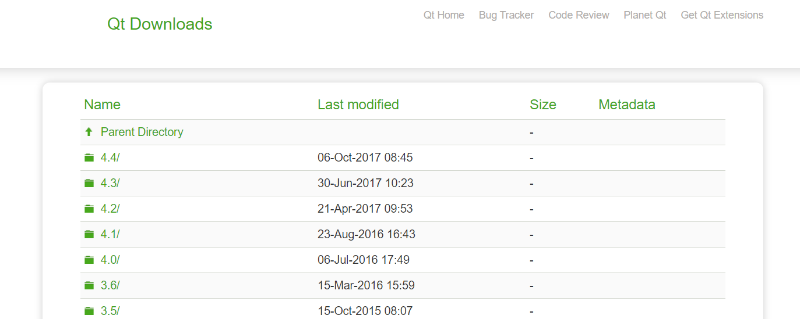
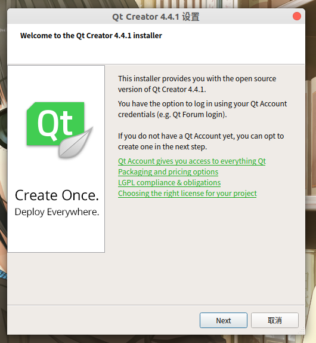
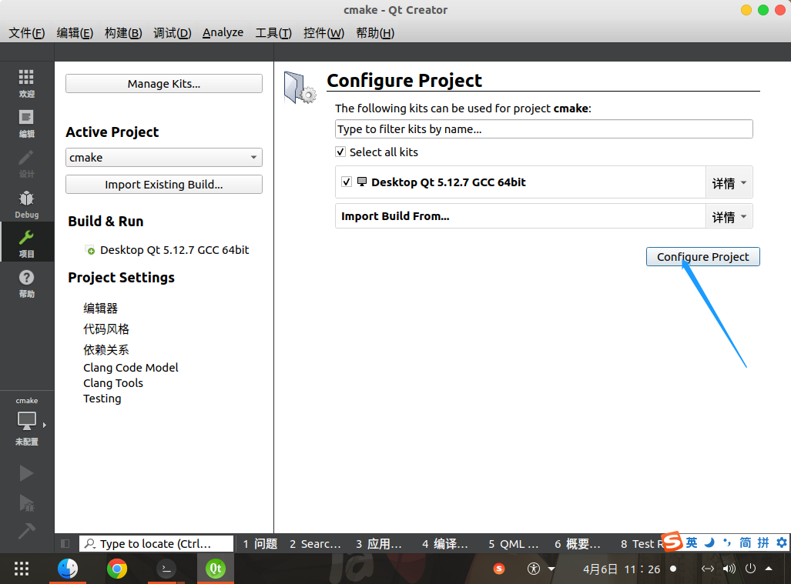
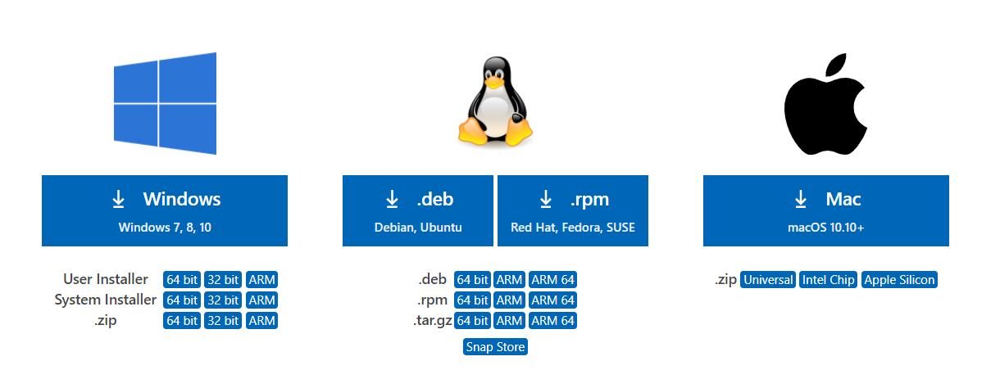
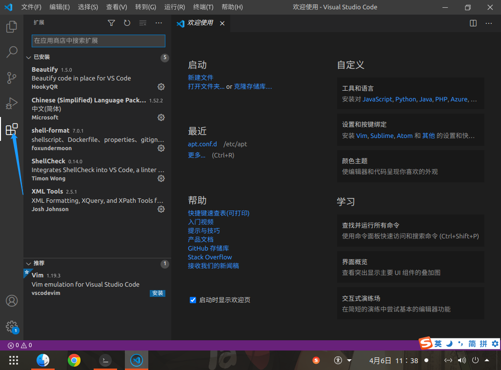
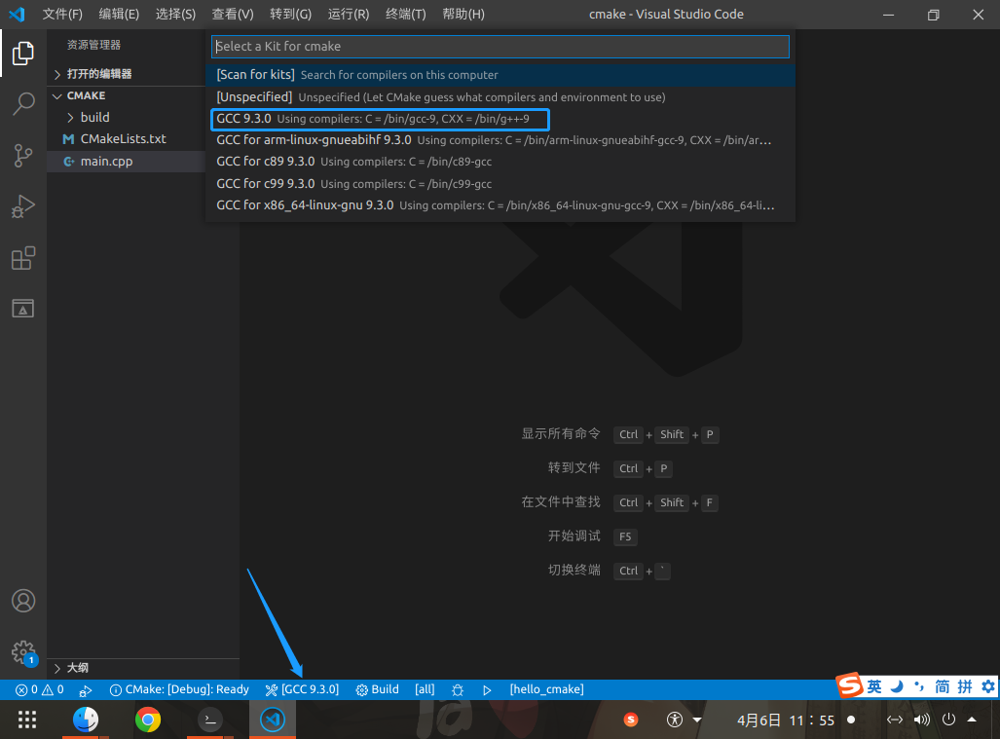
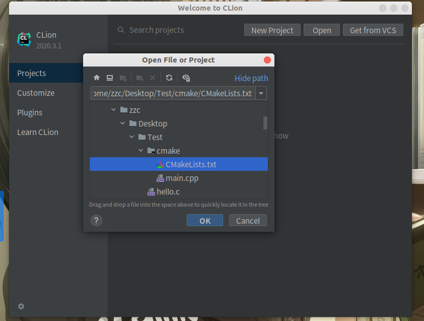

Linux C/C++ 开发环境搭建
[toc]
引言
Windows 下 C/C++ 开发可以直接用宇宙第一 IDE Visual Studio；但是 Linux 下就不能用了
以 Ubuntu 为例搭建 Linux C/C++ 开发环境
编译调试工具
编译器
sudo apt update
sudo apt install gcc g++
调试器
sudo apt install gdb
走两步
来个经典的 HelloWorld
C 版本
#include<stdio.h>
int main()
{
printf("Hello World From C!\n");
return 0;
}
编译运行
gcc hello.c -o hello_c
./hello_c
C++ 版本
#include<iostream>
int main()
{
std::cout << "Hello World From CXX" << std::endl;
return 0;
}
编译运行
g++ hello.cpp -o hello_cpp
./hello_cpp
项目构建工具
sudo apt install make cmake
Make
make 是一个构建工具，它解释 Makefile 中的规则。在 Makefile 文件中描述了整个工程所有文件的编译顺序、编译规则。
Makefile 有自己的书写格式、关键字、函数。而且在 Makefile 中可以使用系统 shell 提供的任何命令来完成想要的工作。但是 Makefile 的编写难度较高。
CMake
CMake是一个跨平台的构建工具，可以用简单的语句来描述所有平台的安装、编译过程。他能够输出各种各样的 Makefile 或者 project 文件，能测试编译器所支持的 C++ 特性。CMake 的组态档取名为 CMakeLists.txt
Cmake 并不直接构建出最终的软件，而是产生标准的构建档（如 Unix 的 Makefile 或 Windows Visual C++ 的 projects/workspaces），然后再依一般的构建方式使用。这使得熟悉某个集成开发环境（IDE）的开发者可以用标准的方式建构他的软件，这种可以使用各平台的原生建构系统的能力是 CMake 和其他类似系统的区别之处。
CMake 可以脱离 IDE 构建项目，目前大部分常用的 IDE 直接支持 CMake
CMake介绍和简单使用
集成开发环境（IDE）
Linux 下常用的 C/C++ IDE 还是比较多的；我这里主要介绍一下 qtcreator、vscode、clion；强烈推荐使用 CLion
Qt Creator
本文介绍单独安装
与 Qt 一起安装请参考《Linux 安装 QT》
下载
https://download.qt.io/archive/qtcreator/

选择所需的版本下载即可；这里下载的是qt-creator-opensource-linux-x86_64-4.4.1.run
安装
chmod +x qt-creator-opensource-linux-x86_64-4.4.1.run
./qt-creator-opensource-linux-x86_64-4.4.1.run
一直下一步就行

导入之前的CMake项目
文件 -> 打开文件或项目 -> 选择 CMakeLists.txt

然后就可以编译运行了
Visual Studio Code
下载
https://code.visualstudio.com/#alt-downloads

Ubuntu 当然是下载 deb
安装
安装 vs code
sudo dpkg -i code_1.52.1-1608136922_amd64.deb
安装插件
- Chinese
- CMake
- CMake Tools
- C/C++

导入之前的CMake项目
文件 -> 打开文件夹 -> 选择 CMakeLists.txt 所在文件夹
如下图，点击状态栏 Kit，选择合适的编译工具

CLion
下载
https://www.jetbrains.com/clion/download/#section=linux
安装
直接解压到需要安装的路径即可
请支持正版 http://www.520xiazai.com/soft/jetbrains-2020-pojie.html
创建桌面快捷方式；注意将 ${clion_install_path} 替换为自己实际安装路径
jetbrains-clion.desktop
[Desktop Entry]
Name=CLion
Exec=${clion_install_path}/bin/clion.sh %f
Icon=${clion_install_path}/bin/clion.svg
Type=Application
导入之前的CMake项目
open -> 选择 CMakeLists.txt -> OK -> Open As Project

由于个人水平有限，文中若有不合理或不正确的地方欢迎指出改正